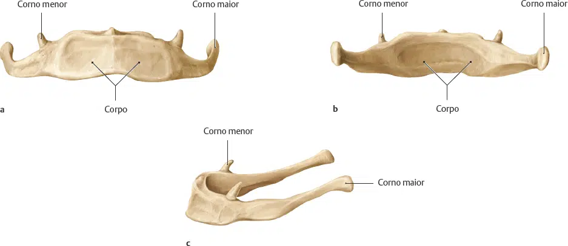
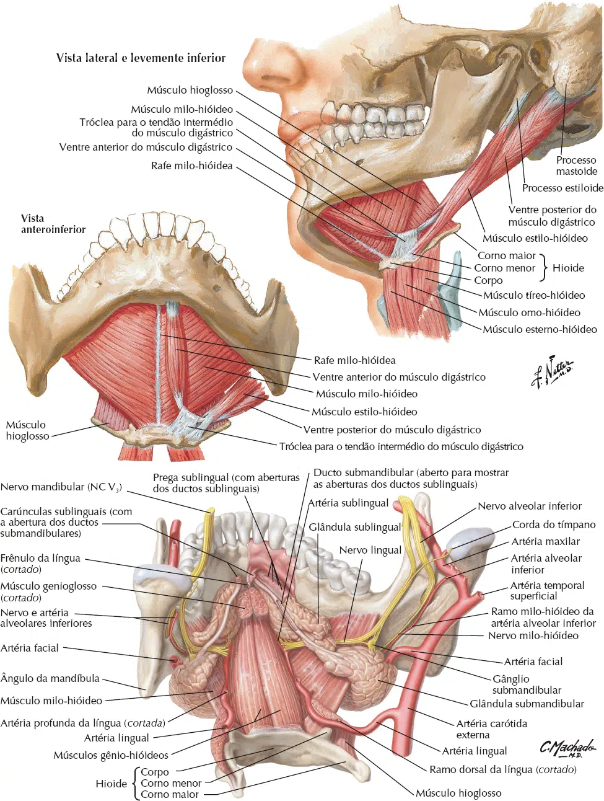

O osso hióide é singular, pois é a única parte do esqueleto que não se liga diretamente a nenhum outro osso.
Está localizado na região do pescoço, debaixo da mandíbula, ligado ao processo estilóide do osso temporal pelos músculos estilo-hióideos e por ligamentos.
Apesar de seu tamanho, ele desempenha funções essenciais:
Sustentação da Língua – Ajuda a manter a posição da língua, facilitando a fala e a deglutição.
Apoio à Respiração – Está conectado a músculos que auxiliam na abertura das vias aéreas.
Articulação da Fala – Permite movimentos precisos da língua e da laringe, essenciais para a produção de sons.
Sua importância é tão grande que fraturas ou deslocamentos podem prejudicar a fala, a mastigação e até a respiração.
O osso hióide tem:
Um corpo;
Dois cornos menores;
E dois cornos maiores, que se projetam posteriormente com os ligamentos estilo-hióideos.
O osso hióide sustenta a língua e proporciona inserção para alguns de seus ligamentos.

